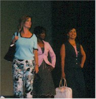
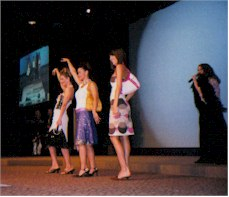
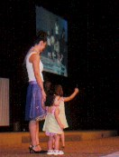
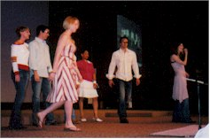
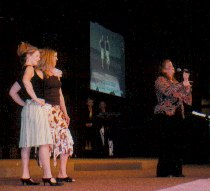
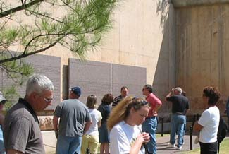
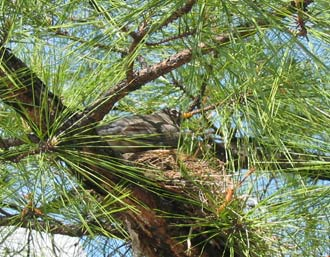

April 17 & 18, 2004
| On Saturday the 17th I was in a fashion show at
our church, the Church of the Harvest. It was a very nice show and a
lot of fun to do. Since Eric was out of town and would have to miss
it, my ever-supportive parents drove all the way across the state to see
the show. It wasn't Dad's thing in the least, but he was a great
sport.
We had a great weekend together. I didn't take as many pictures
as I normally would, mostly because I felt Dad had put up with enough
already! |
|
 |
|
| Here's our group - we modeled for Kokopelli Gwen, Tammy, Detra, Me, and Denise |
Here we are, awaiting our turn to walk the runway |
 |
 |
| Here's another group, they were so cute | This is Jana herding the child models |
|  |
 |
| A group of the young models |
These girls were friends of ours, they did a great job Dana Carter also did an excellent job on the song for that set |
 After the fashion show and lunch, we went to the |
|
| Here is a nice picture of the survivor tree above the reflecting pool. | |
 |
This was a cute bird who had built a nest in a tree just above the field of empty chairs. |